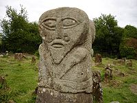
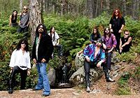
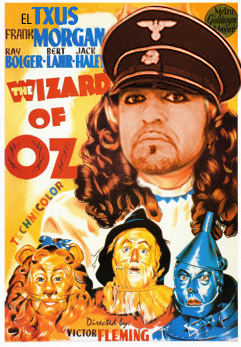
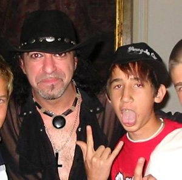

Mägo de Oz
 De: La Frikipedia, la enciclopedia extremadamente seria.
De: La Frikipedia, la enciclopedia extremadamente seria.
De la serie Grupos musicales:
Logo de Mägo de Oz, representando a la madre de uno de los integrantes.
| Origen
|
Inframundo de Praga Madrid
|
| Tiempo
|
1988-actualidad
|
| Estilo
|
Pagan Metal, Antichristic Metal, Celtic Metal, Sex Metal
|
| Discográfica/s
|
Un estudio situado en un lugar no identificado de Pagamundo.
|
| Miembros
|
Ver sección
|
| Estado
|
En un lugar perdido de los montes celtas sometidos a sodomía por un grupo de curas
|
| Sitio web
|
Página del Grupo
|
Mägo de Oz es un famoso grupo friki de música pagana, lo que se podría definir como música realizada con cualquier tipo de instrumento prohibido por la Iglesia Católica. Dirigido por un poderoso druida neocelta llamado Txus y formado por paganos proscritos por el cristianismo, este grupo proviene de un mundo mágico folklórico lleno de duendes y dioses celtas producto de drogas japonesas la imaginería popular anticristiana.
Historia
 Creador y miembro no oficial de Mägo de Oz.
La historia de Mägo de Oz comenzó allá por el año 325 d.C., más o menos. Cuenta la lengua antigua que todo comenzó cuando un pastor celta llevaba su rebaño de cabras por las montañas, mientras se fumaba varios porros y bebía varios barriles de orina de búfalo narcotizado cerveza gala. Entonces el pastor, haciendo eses, chocó de repente contra el peñasco de la imagen, soltando un quejido que tiempo después se convertiría en su nombre: Txus. El hombrecillo quedó inconsciente durante largo rato, hasta que finalmente se levantó, poseído por cientos de espíritus lovecraftianos, y vociferó su nuevo grito de guerra: "¡¡Cabroooneeees!!"
Un tiempo más tarde, Txus viajó por todo el mundo buscando donde comprar un alma y quien le prestase una esperanza, para luego ir en busca de miembros para su banda, encontrando al vocalista José Andrëa en una escuela perdida en las islas del Caribe. Dispuestos a encontrar miembros, Txus asaltó una cárcel romana haciendo uso de sus poderes sobrenaturales, liberando a los presos más sexualmente trastornados que encontró, y después de realizar una orgía en el monte con un grupo de brujas y druidas, les convenció de formar un grupo de música. Pero quedaba lo más importante: el nombre de la banda.
Para elegir el nombre, a uno de los miembros se le ocurrió hacer la ouija. En el transcurso de la misma, Txus fue poseído por Satanás, quién le encomendó convertir el grupo en una secta satánica a cambio de darles los derechos de autor del nombre perfecto: Mago de Oz. Después de oírlo, a Txus le gustó el nombre, pero recordó que si aceptaba, el alma de la orgía sería Satanás y no él, así que se negó a aceptar el trato. Furioso, Satanás juró vengarse de él, pero fue burlado por Txus cuando éste anuló el copyright del nombre poniendo dos puntos encima de la A, quedando establecido el nombre Mägo de Oz.
Deseosos de comenzar su carrera musical, los integrantes del grupo celebraron una orgía celebrada en Nabeshima, en la casa de Tutatis se aparecían para enseñarles el noble arte de la música pagana. El grupo aceptó, y ahí comenzó todo...
Discografía
 Integrantes de la banda momentos antes de un ritual satánico.
 Cartel promocional de un concierto de Mägo de Oz
Hasta la fecha el grupo consta de varios álbumes, todos ellos creados con un 30% de anticristianismo y un 70% de su patentada música pagana-mañega-celta-comunista, interpretada con dulzainas, violines, cuernos de Satanás, flautas y shamisens.
Gracias a su magistral interpretación musical, y gracias a un hechizo vudú que Txus lanzó sobre los jueces, el grupo recibió el Mojón de Oro por vender más de 100000000000000 álbumes (siendo la mitad comprados por la Iglesia Católica para destruirlos). Más tarde ganarían un Premio Darwin por la venta 12000000000000000000 álbumes (siendo esta vez comprados todos por magodeozeros y frikis).
Miembros
 El auténtico poder
de la ridiculez del metal corre por las venas de sus fans.
Los miembros de Mägo de Oz, provenientes de cárceles secretas del Vaticano y de alcantarillas de cascos antiguos de ciudades europeas, son conocidos por sus grandes habilidades para arruinar conciertos de otros grupos interpretar sus especialidades.
- Txus di Fellatio: tocar la batería y lanzar alaridos berserker para animar a los fans.
- José Andrëa: exvocalista, es decir, vociferar las letras del grupo.
- Zeta: el nuevo vociferador de las letras
- Mohammed Abdul ben Al-Raschid: violín, viola y violar a fans.
- Frank Baum: guitarra tuneada y alaridos.
- Carlito Caribbean Cool: guitarra y más alaridos.
- "Kiskilla" Cisneros: teclado, piano, I Ching, sintetizador y xilofón. Dicen que es un hombre lobo.
- Perilla: bajo, alto y mediano.
- Patricia Tapia: vocalista. Es sorda.
- Fernando Ponce de León: se desconoce.
Frases célebres
- ¡¡Cabrooooneeees!! (frase polivalente)
- Haz la guerra en la cama y el amor donde te de la gana, ¡¡cabrooooneeees!! (frase que ya nos indica su afición a las orgías en una cueva perdida en las montañas)
- Si molesto me quedo, ¡¡cabrooooneeees!!
- Cuando oigas a un niño preguntar por qué el sol viene y se va, dile "porque en esta vida no hay luz sin oscuridad", ¡¡cabrooooneeees!!
- Creo que ha llegado la hora de enterrar a esos dioses que han hecho tanto mal, ¡¡cabrooooneeees!!
- Ponte en pie, alza el puño y ven (y el público responde "¡¡Cabrooooneeees!!")
- ¡¡Matadlos a todos, cabrooooneeees!!
- ¡¡FUCK YEAAAAAAH, cabrooooneeees!!
- Viva Txus, ¡¡cabrooooneeees!!
- Hay dos cosas infinitas: el universo y la estupidez humana, y no estamos seguros de la primera, ¡¡cabrooooneeees!!
- No hay camino para la paz, la paz es el camino, ¡¡cabrooooneeees!!
- ¡¡A por ellos, cabrooooneeeees!!
- ¡¡ESTO ES ESPARTA, CABROOOONEEEEES!!
- ¡¡Futari ni God Bless, ¡¡cabrooooneeees!!
- Hasta siempre, ¡¡cabrooooneeees!!
- y (no se podia dejar atras)¡¡cabrooooneeees!!
- Halza tu cerveza.
Curiosidades
Conocido fan de Mägo de Oz.
- Si crees en Dios y escuchas a Mägo de Oz, el espíritu de Txus se te aparece y te viola con un consolador con pinchos.
- Si escuchas al revés un disco de Mägo de Oz, se escucha una voz que dice "¡¡Cabrooooneeeees!!"
- Si dices 3 veces gritando "Txus" en el espejo, se oye una voz que dice "¡te quieres callar ya, coño!", algunos dicen que es una voz espiritual, otros que es que te has convertido en mago nivel 20 y otros que es tu madre.
- En el foro de Meristation, si pones "Mägo de Oz" en el buscador, te sale la dirección del tío del cigarro. ¿Por qué será?
- Se cree que Mägo de Oz y Ska-P cooperan para acabar con la Iglesia. Bueno, no se cree, se sabe.
- Mägo de Oz es el único grupo de música del mundo que puede abducirte si abres un cofre.
- Ahora mismo, el vecino ese que vive al lado tuyo y que es tan curato está intentando denunciar a Mägo de Oz.
- Mañana estará muerto.
Leyendas urbanas
- Mucha gente dice que la famosa frase "¡¡Cabrones!!" aludie a una supuesta zoofilia de Txus con cabras y cabrones del monte. Esto es falso, ya que Txus es necrófilo, no zoófilo. En cuanto al resto del grupo, pues ahí, ahí, no sabemos.
- Otros dicen que Mägo de Oz encontró el cofre de Davy Jones, con el que se inspiraron para su último disco.
- Se comenta que las letras anticlericales de Mágo de Oz inspiraron a Dan Brown para escribir su primer libro.
- Se rumorea que Mägo de Oz no va de gira si no asesinan a un sacerdote católico antes de empezar.
- Se dice que Txus personalmente escribió en este articulo. No es una leyenda, nos lo han confirmado.
Enlaces externos
Ver también
Autor(es):
- Krusher
- Nexo
- Fordus
- Mu
- Juantxorena
- Chrysanthus
- Haakjvork
- Rosano
- Guindi
- Badbull
Frikipedia 2005-2016, Licencia
GFDL 1.2 - Extraído por FrikiLeaks